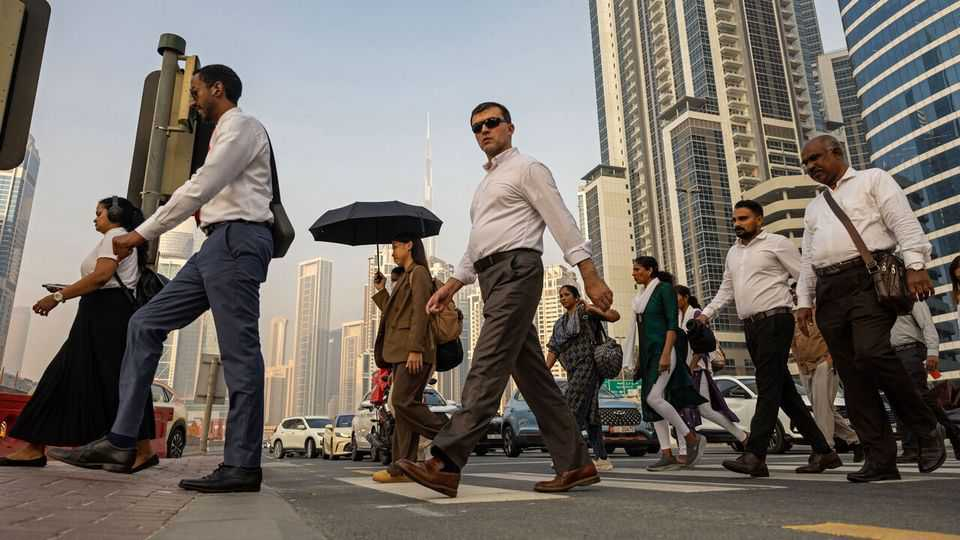

America’s allies oppose more war in Iran. They may not get a say
Economies are shrinking and a deal remains elusive

Nov 5th 2026
THE DIPLOMATS and military officers gathered last week for the Manama Dialogue, an annual talkfest in Bahrain’s capital, all had the same questions—and no answers. As they nibbled puff pastry at the Ritz-Carlton, their conversations invariably came back to Donald Trump’s threats to resume his war with Iran after the midterm elections. Would he do it, and when? Might the Iranians strike first?
There were almost no Americans on hand to ask: the Trump administration sent only a pair of mid-ranking officials, and both were tight-lipped. To some Gulf officials, the unusually small delegation seemed like a snub. “They could at least try to reassure us,” grumbled one.
Gulf states are reluctant to offer such blunt criticism in public, lest they antagonise the president. But they are unanimous that they do not want another round of fighting—unlike in February, when some were equivocal. This time even the United Arab Emirates (UAE), which has taken the most hawkish stance towards Iran, is urging Mr Trump not to strike. “We in the UAE don’t believe that a military solution is viable,” says Anwar Gargash, a diplomatic adviser to the Emirati president.
Behind the scenes, diplomats are scrambling to find a deal. Envoys from Qatar shuttling back and forth to Tehran have encountered two big obstacles, however. One is Mr Trump’s seeming insistence that a new agreement include at least some concessions related to Iran’s nuclear programme. The Iranians refuse to discuss it. Instead they are gloating at Mr Trump’s drubbing in the midterms.
The other is how to sequence an agreement. America and Iran both want to avoid a repeat of the memorandum of understanding, the vague agreement they signed in June and which collapsed within weeks. Each side wants the other to move first. Iran insists that America start by lifting its naval blockade and removing a range of sanctions. Only then will it reopen the Strait of Hormuz. The Americans fear Iran would simply rush to export a glut of stored oil, easing some pressure on its economy, then fail to take reciprocal steps.
Participants in Manama were split on how soon America might act if talks fail to yield a deal. Some suggested Mr Trump may wait several weeks. America is still building up its forces. It has also announced talks between Russia and Ukraine in Abu Dhabi on November 10th, a curious thing to do if it were planning to imminently restart a war that would make Abu Dhabi a target.
Citizens and expats alike are nervous: the Gulf has not felt this tense since April, when Mr Trump was threatening to wipe out Iranian civilisation. Some residents are stocking up on food, water and cash. If the war resumes, “you might start to question, why do I stay here?” says Laith Alajlouni of the International Institute for Strategic Studies, a British think-tank.
Gulf states would be less able to defend themselves, having depleted their air-defence interceptors. They would also have smaller fiscal buffers to cushion the economic blow. Saudi Arabia had expected to run a deficit of 3.3% of GDP in 2026; it hit that mark by July and may now exceed 6%. Five of the six Gulf economies are expected to shrink this year. Three will see a double-digit contraction.
The IMF thinks the Gulf could bounce back quickly next year: its latest forecast pencils in 9.1% growth. But that depends on a lasting peace. Some big events are already being scaled back or postponed. The Asian Cup, a football tournament, was meant to start in Saudi Arabia in January. It has been booted to December 2027.
The region will also have fewer escape routes than it did last time. Saudi Arabia was relatively safe earlier this year: Iran attacked it less fiercely than most neighbouring countries. That let Bahrain’s national carrier shift operations to the kingdom. Planes landed in nearby Dammam, and buses carried passengers the rest of the way. Now, though, Dammam’s airport is being targeted by the Houthis, an Iran-backed militia in Yemen. Two people were killed there in a drone attack last month.
Since the midterm elections Mr Trump has sent mixed messages. He told one journalist that he might order a “heavy hit” and another that he was in no rush to do so. Rulers throughout the Gulf would like to believe the second one—but February taught them to beware. ■